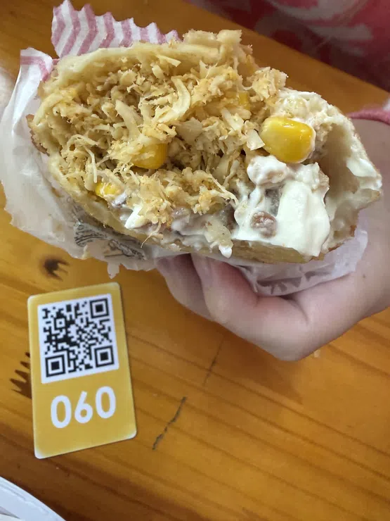

UM OLHAR MAIS DE PERTO
Nossa Galeria
Conheça a Pastelaria da Sogra pelos detalhes: pastéis, ambiente, fachada e momentos que fazem parte da experiência na casa.
Explorar fotografias Fotografias reais da pastelaria


FOTOGRAFIAS DA CASA
16 fotografias
Explore cada detalhe
Escolha uma categoria ou veja a coleção completa. Clique em qualquer fotografia para ampliar.
DEU VONTADE DE UM PASTEL?
Explorar cardápio
Os sabores você encontra no cardápio.
Confira as opções da casa e escolha seu próximo favorito.